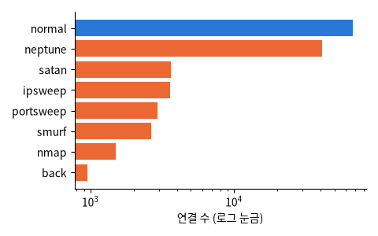

Tavallaee et al. (2009). KDD Cup 99 를 정리한 침입 탐지 데이터: 연결 한 건마다 41개 숫자 (길이 · 프로토콜 · 서비스 · 바이트 수 · 오류 비율 …) + 정상 / 공격 이름. 학습 125,973건 · 시험 22,544건 (시험에만 있는 공격 포함)

| duration | protocol_type | service | flag | src_bytes | dst_bytes | attack |
|---|---|---|---|---|---|---|
| 0 | tcp | http | SF | 206 | 3581 | normal |
| 0 | tcp | http | SF | 239 | 2239 | normal |
| 0 | tcp | smtp | SF | 1271 | 442 | normal |
| 0 | tcp | courier | REJ | 0 | 0 | neptune |
| 0 | udp | private | SF | 1 | 0 | satan |
| 0 | udp | domain_u | SF | 43 | 74 | normal |
| 열 | 종류 | 빈칸 | 고유값 수 | 범위 · 대표값 |
|---|---|---|---|---|
| duration | 숫자 | 0 | 2981 | 0 ~ 42,908 (평균 287.1) |
| protocol_type | 글자 · 범주 | 0 | 3 | 가장 흔한 값: tcp (81.5%) |
| service | 글자 · 범주 | 0 | 70 | 가장 흔한 값: http (32.0%) |
| flag | 글자 · 범주 | 0 | 11 | 가장 흔한 값: SF (59.5%) |
| src_bytes | 숫자 | 0 | 3341 | 0 ~ 1,379,963,888 (평균 45,566.7) |
| dst_bytes | 숫자 | 0 | 9326 | 0 ~ 1,309,937,401 (평균 19,779.1) |
| attack | 글자 · 범주 | 0 | 23 | 가장 흔한 값: normal (53.5%) |
neptune (SYN flood, DoS) 이 정상 다음으로 많다
학습 때 본 적 없는 공격: 진짜 실력을 재는 부분
| ① 한 행 | 네트워크 연결 한 건 |
| ② 입력 X | 41개 숫자 · 범주 (프로토콜 · 서비스 · 바이트 수 · 실패 비율 …) |
| ③ 출력 y | 정상 / 공격 |
| ④ 평가지표 | 재현율 (놓친 공격) · 정밀도 (헛경보) |
| ⑤ 기준선 | 전부 '정상' |
문제를 정할 때 처음 채워 보는 칸들입니다. 여기서 끝이 아니라, 시험 데이터를 어떻게 나눌지 · 틀렸을 때 손해가 얼마인지 · 예측 시점에 정말 알 수 있는 값인지 같은 칸을 더 붙일수록 좋은 문제가 됩니다.
random split of train accuracy 99.9% precision 99.9% recall 99.8% official test (new attacks) accuracy 77.0% precision 96.8% recall 61.6%
누가, 왜, 어떻게 만든 데이터인지 직접 확인해 보세요.
프로젝트 주제를 고를 때 참고하세요 (일반적인 예시).